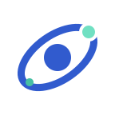
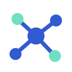
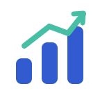
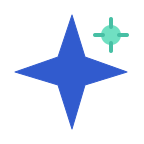
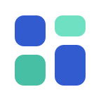

02 · Signal
Incoming signals organized into action
SalesMora.ai
Connected points and a rising path.
Eight marks shown beside the same wordmark. Mosaic is selected; the other marks remain as explored alternatives.
Connected points and a rising path.

A focused center surrounded by connected movement.

A central hub connecting people, records, and workflows.

Steps and a rising path suggest momentum from lead to completed work.

A clear spark paired with a small signal point gives the assistant a recognizable cue.
A continuous cycle suggests follow-up, recurring work, and automation.

Distinct blocks suggest modular tools organized into one system.
A directional needle suggests clarity about the next best action.